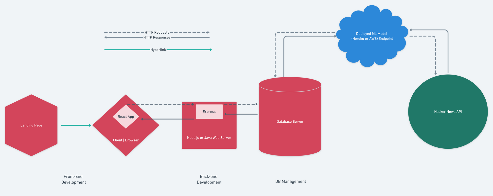

Hacker News is a popular tech forum run by startup incubator Y Combinator. Like in most online communities, Hacker News has its share of trolls. Our app will automatically rank comments based on sentiment and help you determine if a user is honest or a trolling.
